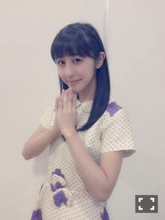
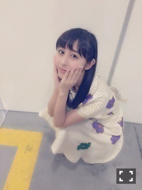
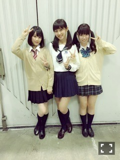
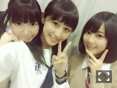
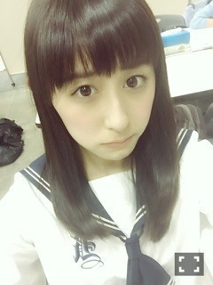
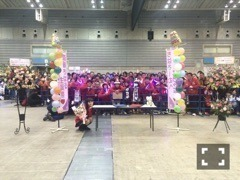
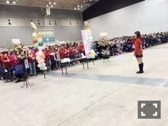
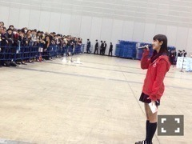
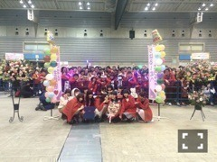
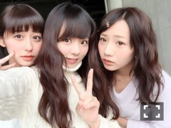

| 2015/02 09 Mon | 素敵な日をありがと う。最高の生誕祭。 (´>∀<｀)ゝ |
ちはるーむへようこそ(﹡ˆ ˆ﹡)
昨日は、アルバムの握手会！！
思ってたよりもたくさんの方が来てくださって
すごく嬉しかったヽ(；；)丿

ありがとう♡
涙がまだ悲しみだった頃
の衣装！！
推しのねねがセンターだったり
懐かしい衣装だし、披露する場が少なかったので
着たくなっちゃって♡

次なに着ようか迷うな〜(> <)♪
なにがいいっ？？？
そして今日は、10枚目最後の握手会でした♡
たくさんの方が来てくださって、
本当私も楽しかったし素敵なひとときでしたヽ(；；)丿
心から楽しめたし笑顔になれました！！！
ありがとう。
高校生最後の個別握手会ということで、
中3組で合わせて制服を着たんだ！！
セーラー服は愛未が貸してくれました。
ありがとう！！


らぶ。中3組。
中3から一緒だったのに、
もう高3が終わってしまうよ。。
早いなあ。寂しいなあ。(> <)
昔からずっと大好きな2人。
天真爛漫でお嬢様ないくちゃんと
冷静で真面目で人懐っこいひめたん。
この2人と同い年で、仲良くなれて
本当よかったなあヽ(；；)丿
らぶよ。らぶ。
これからもずっと。

4部では、ツインをしましたー！！
何年もやってなかった(はず)だし
人前でツインすることなんてないから
すごいレアだったー♡
めっちゃ恥ずかしかったけど、
ちはるーむめいとさん達が
すごい褒めてくれたから嬉しかった♡

5部では、ストレート降ろし！！
ストレートも人気あってよかったな♡
そしてそして、5部の後には
生誕祭を開いてくれました♡(﹡ˆ ˆ﹡)
生誕委員の皆さんが、
すごい時間や労力を費やして
頑張ってくれていた生誕祭。
みなさんの頑張りが伝わってきました。(> <)
レーンや、ブース。
ちはるーむ掲示板やアルバム。
パーカーやメンバーからのお手紙。
ひとりひとりのメッセージ。
ほんっとに嬉しかったですヽ(；；)丿。
私は、素敵なファンの方々を持って
本当に幸せだなと改めて思いました。

本当に感謝しています。
してもしきれないけど。。
皆さんがいてくれて、よかった。
ありがとう。
心の支えです。本当に。。
ありがとうヽ(；；)丿
そして、たくさんのファンの方も
5部終わりで疲れてたり、時間も遅い中で
残っててくださいましたヽ(；；)丿

photo by まひろ

photo by いくちゃん
ありがとう。。♡
そして、たくさんのメンバーもヽ(；；)丿

ちはるーむめいとさんが
メンバーにパーカーを送ってくれて
みんな喜んでました♡
貰ってないメンバーも欲しがってたくらい
人気でしたよ♡
まひろ、あみ、ずー。
手紙読んでくれてありがとうヽ(；；)丿
大切にするねヽ(；；)丿
それにしても、
あーーーヽ(；；)丿
ほんとに楽しかったヽ(；；)丿
嬉しかったヽ(；；)丿
時間、終わって欲しくなかったな(> <)。
少し早い誕生日を祝ってくれて、ありがとう。
大好きです。


らぶ。
ばいるんっ
るんるんっ
ちはるんっ
(´>∀<｀)ゝ
コメント(270)
2015/02/09 00:00